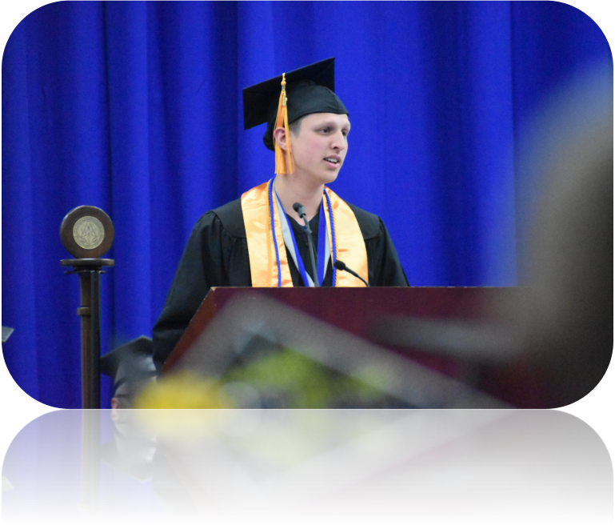

Who am I?
An aspiring Computer Science student, who is passionate about staying up to date with the most cutting-edge technologies.
Oh, did I mention my obsession with Computer Vision?

An aspiring Computer Science student, who is passionate about staying up to date with the most cutting-edge technologies.
Oh, did I mention my obsession with Computer Vision?
Skills: AI/CNN, Python, PyTorch, OpenCV
A Simple WIP project where I challenge the complexity of Convolutional Neural Networks(CNN). This project's goal is to make developing CNN's easier for newcoming AI developers.
Skills: OpenCV, Pytorch, Python, AI/CNN
A collection of my assignments/work during my Computer Vision studies. This repo contains detailed code that solves many image classification & processing problems.
Skills: IoT, Raspberry Pi, Python, Sockets
This project involves 3 transistors(RGB Colors), LED light strip, Raspberry Pi and a big whiteboard. The LED lightstrip is controlled wirelessly via the Raspberry Pi using socket communications.
Skills: Raspberry Pi, Linux
In this project, I built an arcade machine which is controlled by a Raspberry Pi running a linux operating system. The arcade uses joysticks for input. The arcade also acts as a server for the LED whiteboard, which includes the use of sound effects.
Skills: Java, JDBC, MySQL, JavaFx
JPSecure aims to fight against malicious actors by providing the end user an easy+safe way to store complex passwords. JPSecure uses RSA key based encryption to ensure all clients passwords are safe. The server stores the passwords in an encrypted MySQL database. Writing secure code was this projects main objective.
Skills: Java
This repo contains some of my programming assignments for my Java-based courses. All code is well-documented and styled. This repo provides a reference to me when I find myself coding in Java.
You can find me on: